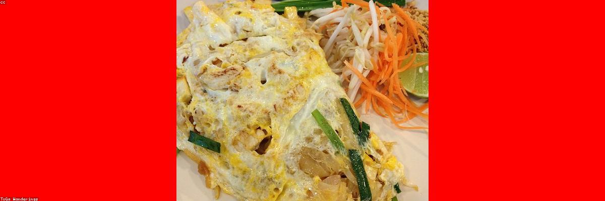
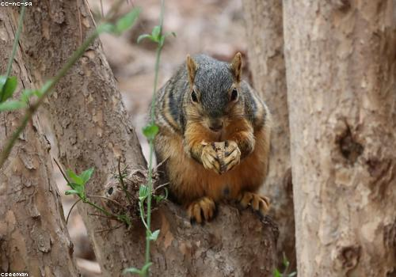
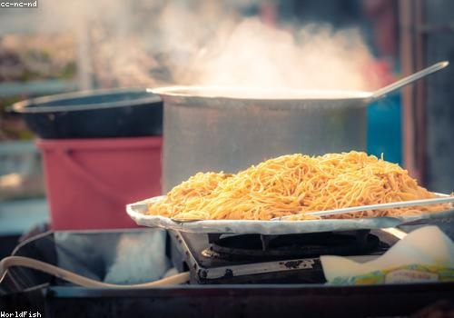
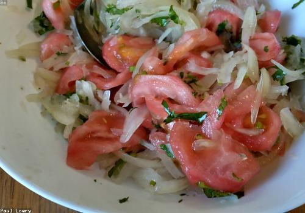

About This Site
Hi, my name is Abdalatif and I made this Simple Recipes website for my HTML and CSS course. I really like cooking simple meals, so I put together a few of my favorite easy recipes on here.
Every recipe below has a picture, a list of ingredients, and simple step by step instructions. My goal was to make it clean and easy to follow so anyone can cook these even if they are just starting out. Thanks for visiting and I hope you find something you want to try!
Fluffy Pancakes

Ingredients
- 1 cup flour
- 1 tablespoon sugar
- 1 egg
- 1 cup milk
- 2 tablespoons melted butter
- 1 teaspoon baking powder
Instructions
- Mix the dry ingredients in a bowl.
- Add the egg, milk and butter and stir until smooth.
- Pour some batter onto a hot pan.
- Flip when you see bubbles, cook the other side.
- Serve with syrup and enjoy!
Easy Tomato Pasta

Ingredients
- 200g spaghetti
- 1 can of tomato sauce
- 2 cloves garlic
- 2 tablespoons olive oil
- Salt and pepper
- Parmesan cheese (optional)
Instructions
- Boil the spaghetti until it is soft, then drain it.
- Heat the olive oil and cook the garlic for a minute.
- Add the tomato sauce, salt and pepper.
- Mix the pasta into the sauce.
- Top with cheese and serve.
Fresh Garden Salad

Ingredients
- Lettuce
- 1 tomato
- 1 cucumber
- Half an onion
- Olive oil and lemon juice
- Salt
Instructions
- Wash and chop all the vegetables.
- Put everything in a big bowl.
- Drizzle olive oil and lemon juice on top.
- Add a little salt and mix well.
- Serve fresh.